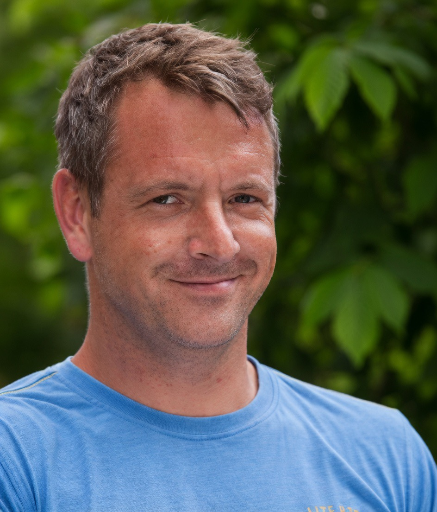
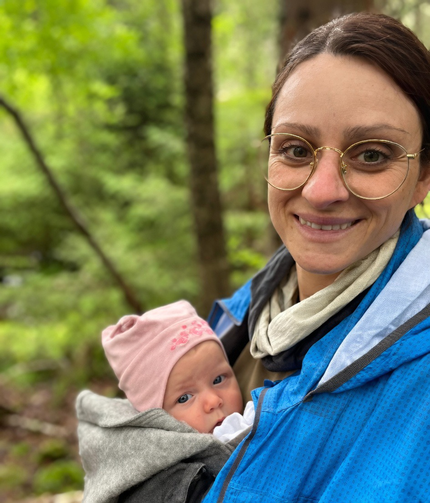

Unser Team
Menschen hinter dem Handwerk
Ein kleines, eingespieltes Team – erfahren, zuverlässig und mit echtem Interesse am handwerklich guten Ergebnis.
Volkmar Bahlinger
Dipl. Bauingenieur
Geschäftsführer und Gesellschafter
Im Betrieb seit 1993
Johannes Fais
Stuckateurmeister
Geschäftsführer und Gesellschafter
Meister seit 2013
Gabriele Göhring
Gesellschafterin
Familientradition seit 1957
Roman Vieider
Stuckateur-Vorarbeiter
Trockenbau · Brandschutz · Spachteltechnik · WDVS · Blower-Door · SunAir
Im Betrieb seit 1992

Dennis Weber
Maler-Facharbeiter
Malerarbeiten · Spachtelarbeiten · Oberputze
Im Betrieb seit 2015

Rebecca Fais
Reinigungskraft
Unterstützung im Betrieb
Unsere Geschichte
Tradition seit 1957.
Gegründet von Stuckateurmeister Manfred Göhring am 15. April 1957. Nach seinem Tod 1992 übernahm Thea Göhring die Leitung. Volkmar Bahlinger stieg 1993 als Diplom-Bauingenieur ein, 1995 folgte die Umfirmierung zur GmbH.
2013 absolvierte Johannes Fais die Meisterprüfung und stieg als Gesellschafter ein. Seit April 2024 führen er und Volkmar Bahlinger den Betrieb gemeinsam. Gabriele Göhring bleibt als Gesellschafterin verbunden.
„Nichts ist so beständig wie die Veränderung." – Heraklit
Ausbildungsbetrieb
- Ausbildung von Stuckateuren seit Jahrzehnten
- Engagierte Förderung von Nachwuchs
- Aktuell wieder Auszubildende im Team
- Überregionale Bekanntheit durch Qualität